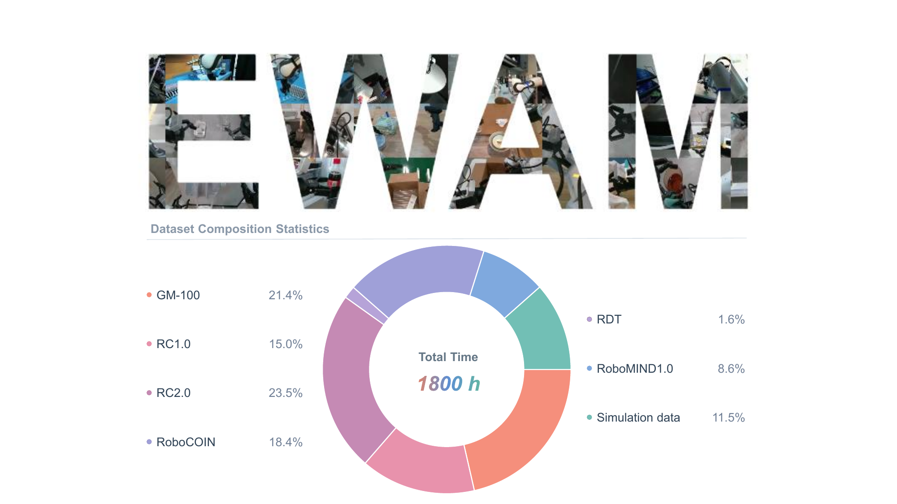

01
Shallow layers
Unified embodied intelligence
From semantic understanding, through visual foresight, to action formation.
Shallow layers
Intermediate layers
Deep layers
The vision-language expert contributes semantics and the video expert contributes prediction.
EWAM lets one action stream read both at every depth.
Action tokens read semantic, visual, predicted-future, and action information at every layer.
Without layer-wise supervision, attention moves from VL to predicted future to action across depth.
Surpasses VLA, WAM, and hybrid baselines; human data and subtask supervision add further gains.
Existing models let one expert dominate action attention.
EWAM hands attention off from vision-language, to predicted future, to action as depth grows.
The action stream can read every expert. Perceptual queries remain within their own streams.
Qwen3-VL features encode the instruction and current image into layer-aligned semantic representations.
A Wan2.2 video expert evolves noisy future-video latents into predictive visual context.
Noisy action chunks query semantic, observed, predicted, and action keys in a shared forward process.
VITRA-1M, EgoDex, and Xperience, with wrist motion expressed as camera-relative end-effector displacements so human wrists and robot end-effectors share one task-space layout.
How human data is used →A lightweight decoder predicts the active subtask and an MLP head regresses the phase index from the action stream. Both losses are added only during post-training; no external planner is used.
See the long-horizon results →
The architecture does not prescribe shallow, middle, or deep roles. The organization appears during training, replicates across tasks, and remains stable over denoising steps.
VL tokens receive most action-query attention, grounding the instruction in the current scene.
Raw future-frame attention overtakes VL-image attention as prediction becomes the dominant visual source.
Action self-attention dominates while concise semantic and predictive context is retained.
Each map shows the share of action-query attention on one source, per layer (rows) and inference step (columns).
VL dominates shallow layers, video peaks in the middle, and action self-attention takes over in deep layers.
Splitting visual attention into the current image and the predicted future frames.
Predicted frames replace the current image as the main visual source from about layer 13, on one task (a) and across all 50 RoboTwin tasks (b).
Future-frame minus VL-image attention (pp)
VL-image leads at almost every layer; no division yet.
Future frames lead from layer 8 onward.
Shallow layers return to the image; future leads from layer 13 onward.
One training run without robot pretraining. The attention mask sets which sources are reachable, not the depth at which each is used. Hover a step to highlight it.
−16.27 without VL; only −0.82 without video.
−89.25 when predicted-future keys are masked.
One fixed robot-pretrained checkpoint on RoboTwin Randomized (50 tasks × 100 episodes), masked at inference without retraining.
| Configuration | Score | Δ |
|---|---|---|
| Full unified model | 83 | – |
| Symmetric full attention | 81 | −2 |
| No VL access, layers 0–9 | 78 | −5 |
| No video access, layers 10–19 | 78 | −5 |
| Action only, layers 24–29 | 83 | 0 |
| Configuration | Score | Δ |
|---|---|---|
| Full unified model | 92.80 | – |
| Mask all video, layers 0–9 | 91.98 | −0.82 |
| Mask VL, layers 0–9 | 76.53 | −16.27 |
| Mask condition, layers 10–19 | 81.40 | −11.40 |
| Mask future, layers 10–19 | 3.55 | −89.25 |
| Mask all video, layers 10–19 | 0.25 | −92.55 |
| Mask all video, layers 20–29 | 65.82 | −26.98 |
The left panel reports independently trained models without pretraining; the right panel masks action-attention keys only at inference time in one fixed cross-embodiment robot-pretrained checkpoint. Deltas are relative to the full-model baseline within each panel and should not be compared across panels. “Action only” removes both VL and video keys from action queries in the specified layers.
Every RoboTwin task exhibits shallow VL dominance.
Mean pairwise correlation of attention profiles across measured denoising steps.
| Task | No injection | Injection setting | Observed behavior or outcome | Success |
|---|---|---|---|---|
| Adjust Bottle | 5/5 | Left-facing (43, 46) | Donor-directed first grasp misses; both recover after cutoff | 2/2 |
| Right-facing (44, 45, 47) | Donor-consistent right arm instead of required left arm; no recovery | 0/3 | ||
| Place Empty Cup | 5/5 | All targets (43–47) | All injected rollouts fail | 0/5 |
| Stack Blocks Two | 5/5 | All targets (43–47) | All injected rollouts fail | 0/5 |
| Click Bell | 5/5 | All targets (43–47) | Only seed 46 remains successful | 1/5 |
| Grab Roller | 5/5 | All targets (43–47) | Only seed 45 remains successful | 1/5 |
| Overall | 25/25 | All injected targets | Success decreases from 100% to 16% | 4/25 |
For each task, future-frame keys and values from a successful donor rollout (seed 100) are injected into target seeds 43–47 at layers 10–19 during the first three policy calls, while each target keeps its own condition-frame, VL, and action representations.
EWAM is evaluated under complementary protocols: RoboTwin 2.0 clean-to-random and in-domain adaptation, the four LIBERO suites, and seven tasks on three real-world embodiments. Click a card to open the full table.
| Paradigm | Model | C2C (%) | C2R (%) | Average (%) |
|---|---|---|---|---|
| VLA | starVLA | 46.52 | 3.16 | 24.84 |
| GalaxeaVLA | 62.70 | 12.72 | 37.71 | |
| Xiaomi Robotics-0 | 62.90 | 18.20 | 40.55 | |
| X-VLA | 68.00 | 20.90 | 44.45 | |
| ABot-M0 | 57.40 | 30.36 | 43.88 | |
| π0.5 | 70.70 | 46.00 | 58.35 | |
| WAM | Fast-WAM | 77.80 | 1.90 | 39.85 |
| ImageWAM | 84.4 | 18.3 | 51.35 | |
| X-WAM | 70.00 | 25.80 | 47.90 | |
| 4D-WAM | 81.5 | 41.8 | 61.6 | |
| VLA+WAM | GigaBrain-0.7 | 66.8 | 67.9 | 67.3 |
| EWAM (Ours) | 82.2 | 72.1 | 77.2 |
A single policy is adapted on clean demonstrations of all 50 tasks and evaluated with 100 episodes per task under clean-to-clean (C2C) and clean-to-random (C2R) conditions. Average is the mean of C2C and C2R. Official leaderboard values use its 2026-09-01 snapshot. The EWAM row uses cross-embodiment robot-pretrained initialization followed by clean-only downstream adaptation.
| Paradigm | Model | Clean (%) | Randomized (%) | Average (%) |
|---|---|---|---|---|
| VLA | π0.5 | 82.7 | 76.8 | 79.8 |
| ABot-M0 | 86.1 | 85.1 | 85.6 | |
| LingBot-VLA | 88.6 | 86.7 | 87.7 | |
| JoyAI-RA | 90.5 | 89.3 | 89.9 | |
| HyVLA-0.5 | 90.9 | 90.1 | 90.5 | |
| ACE-Ego-0 | 91.1 | 90.6 | 90.9 | |
| WAM | GigaWorld-Policy | 86.4 | 85.0 | 85.7 |
| LaWAM | 92.6 | 89.8 | 91.2 | |
| LingBot-VA | 92.9 | 91.5 | 92.2 | |
| Fast-WAM | 91.9 | 91.8 | 91.9 | |
| VLA+WAM | Motus | 88.7 | 87.0 | 87.9 |
| InternVLA-A1 | 89.4 | 89.6 | 89.5 | |
| WLA-0 | 92.9 | 90.0 | 91.5 | |
| EWAM (Ours) | 93.0 | 92.8 | 92.9 |
All methods, including EWAM, are adapted on both clean and randomized demonstrations; this protocol differs from the clean-only adaptation in Table 4. Average is the mean of the Clean and Randomized scores.
| Paradigm | Model | Spatial | Object | Goal | Long | Average |
|---|---|---|---|---|---|---|
| VLA | π0.5 | 98.8 | 98.2 | 98.0 | 92.4 | 96.9 |
| ABot-M0 | 98.8 | 99.8 | 99.0 | 96.6 | 98.6 | |
| Qwen-VLA-Instruct | – | – | – | – | 97.9 | |
| WAM | Fast-WAM | 98.2 | 100.0 | 97.0 | 95.2 | 97.6 |
| LingBot-VA | 98.5 | 99.6 | 97.2 | 98.5 | 98.5 | |
| LaWAM | 99.4 | 99.6 | 98.4 | 97.0 | 98.6 | |
| VLA+WAM | Motus | 96.8 | 99.8 | 96.6 | 97.6 | 97.7 |
| WLA-0 | 99.0 | 100.0 | 97.8 | 97.6 | 98.6 | |
| EWAM (Ours) | 98.6 | 99.8 | 98.6 | 98.2 | 98.8 |
Success rate (%) on the four LIBERO suites. Average is the mean across suites. Comparison results are taken from the corresponding published evaluations; a dash indicates that only the overall score was reported.
Success rate (%) on physical robots. EWAM is higher than π0.5 on six tasks and ties on the Dobot towel task.
Full-episode success (%) over 200 episodes per instruction-conditioned block task.
| Model | Stack Bowls | Object into Box |
|---|---|---|
| π0.5 | 70 | 80 |
| Motus | 60 | 20 |
| LingBot-VA | 70 | 60 |
| Xiaomi Robotics-0 | 70 | 70 |
| Fast-WAM | 60 | 30 |
| EWAM (Ours) | 80 | 90 |
| Model | Dobot | Unitree G1-D | |||
|---|---|---|---|---|---|
| Pour Water | Tidy Desk | Towel | Kettle Pouring | Pour Beans | |
| π0.5 | 30 | 20 | 40 | 60 | 60 |
| Motus | 30 | 10 | 30 | 30 | 40 |
| Fast-WAM | 20 | 70 | 0 | 20 | 30 |
| EWAM (Ours) | 70 | 80 | 40 | 70 | 80 |
Success rate (%) over physical trials on each task. EWAM attains the highest available success rate on every task and ties π0.5 on the Dobot towel task.
| Condition | Trials | S | P | F | Success (%) |
|---|---|---|---|---|---|
| In-domain baseline | 10 | 8 | 2 | 0 | 80.0 |
| Cup instance | 10 | 7 | 3 | 0 | 70.0 |
| Placement | 10 | 7 | 2 | 1 | 70.0 |
| Background and clutter | 10 | 6 | 4 | 0 | 60.0 |
| All held-out conditions | 30 | 20 | 9 | 1 | 66.7 |
S: completed with no stage error; P: at least one stage fails but the episode runs to completion; F: outright failure. Success counts S only. Failures concentrate near pouring: across all 40 trials, grasping succeeds in 39, alignment in 29, and pouring in 28, and most incomplete trials involve spills from inaccurate cup alignment.
| Task | Setting | Grasp | Place | Stack | Full |
|---|---|---|---|---|---|
| Instructed Ranking | w/o subtask | 94.0 | 89.5 | – | 83.5 |
| w/ subtask | 93.5 | 97.5 | – | 91.0 | |
| Instructed Stacking | w/o subtask | 91.5 | – | 44.5 | 44.5 |
| w/ subtask | 98.5 | – | 58.5 | 58.5 | |
| Instructed Ranking & Stacking | w/o subtask | 60.0 | 37.0 | 24.5 | 1.5 |
| w/ subtask | 63.0 | 51.5 | 39.5 | 16.0 |
Success rates (%) over 200 episodes per task. Grasp, Place, and Stack are stage-wise completion rates; Full is complete-episode success. Dashes mark inapplicable stages.
EWAM uses human data in two separate ways: large-scale public egocentric video for pretraining, and self-collected task demonstrations retargeted to the robot for co-training.
About 2,084 hours of VITRA-1M, EgoDex, and Xperience video are reduced to one camera-relative wrist-motion action space. Policies trained on four RoboTwin robots are then evaluated on the held-out Aloha-Agilex-2; the compared policies differ only in whether they start from human pretraining.
Aggregate success over 50 RoboTwin 2.0 tasks on the unseen Aloha-Agilex-2 embodiment.
Public egocentric video, with wrist motion as the action target.
Best held-out-embodiment success without and with human pretraining.
Matched budget of 120K robot-training steps: a 30.7-point gain.
G1-D pouring under the same 60 robot + 30 human co-training mixture, robot- vs. human-pretrained.
For co-training, we record task-specific demonstrations with a headset and wrist trackers, convert them into robot-compatible observation–action trajectories, verify them by replay, and mix them with robot episodes.
All configurations omit EWAM human and robot pretraining and are evaluated over 10 physical trials.
Adding 30 egocentric episodes to 60 robot episodes reaches 20%, the same as 90 robot-only episodes, at a much lower collection cost.
Adding 30 to 1,000 egocentric episodes keeps raising success under tablecloth and cup changes, without saturating.
Rollouts of EWAM across embodiments and tasks.
@techreport{wang2026ewam,
title = {{EWAM}: Emergent Depth-Wise Specialization in a Unified Embodied Model --- From Semantic Understanding through Visual Foresight to Action},
author = {Wang, Hao and Wen, Jiajun and Liu, Jingzhi and Xue, Shuoshuo and Chen, Zhiliang and others},
institution = {Yinwang Intelligent Technology Co. Ltd.},
year = {2026}
}